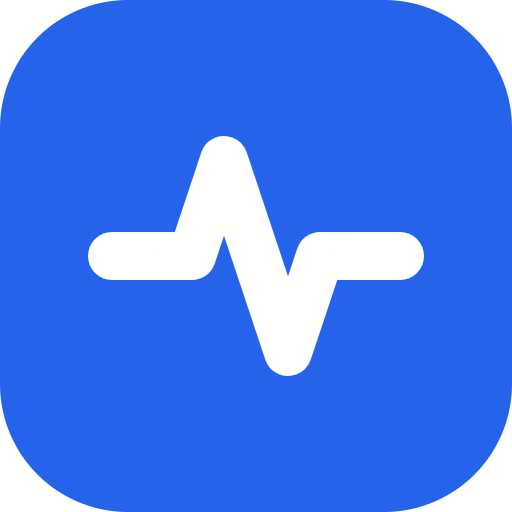
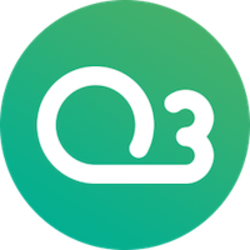

Subrata Choudhury
Software Engineer
I'm a full-stack engineer with roots in electrical engineering, building reliable systems for real people: public platforms, health records, and tools that quietly run in the background and just work.
I care about clear architecture, honest documentation, and clear communication with stakeholders, even under pressure. I like taking messy, high-stakes problems and turning them into simple, dependable software.

SpendLens
Offline-first Android expense tracker that turns UPI and bank notifications into a private, on-device spending ledger. Zero network permission, AES-256 encrypted.

SuperFind
Find a Bluetooth device by its radio. A Rust particle-filter fusion core powering a Linux CLI and an Android app, showing honest uncertainty instead of a fake pinpoint. Offline, no internet permission.
CIVIC: Client-side AI Guardian
On-device AI that flags misinformation, phishing and "digital arrest" scams in real time, without sending your data anywhere. Built for the eRaksha AI for Peace initiative.
Smart City OS
AI-powered IoT platform that ingests city-wide sensor data and turns it into management decisions. Blockchain-backed, Supabase, live demo.

Daily Spark: Solana dApp
An interactive Web3 app on Solana Devnet with a working frontend and Anchor programs deployed on-chain.

PHC Commons
Full-stack, offline-first PWA for public health centres, government and private clinics. Container app built during MasaiVerse × PlatformCommons.
Software Engineering Intern
Confidential (under NDA)
Web3 Project Administrator
O3 Labs Inc.Web3 Administrator
Theia StudiosCommits and daily activity from my internship work on OpenForge. Not all of it shows up on GitHub.
 TypeScript
TypeScript
 Node.js
React
Next.js
Prisma
Node.js
React
Next.js
Prisma
 PostgreSQL
PostgreSQL
 Redis
Solana / Anchor
Rust
Redis
Solana / Anchor
Rust
 Python
Python
 BigQuery
BigQuery
 Docker
Docker
 Git
Git